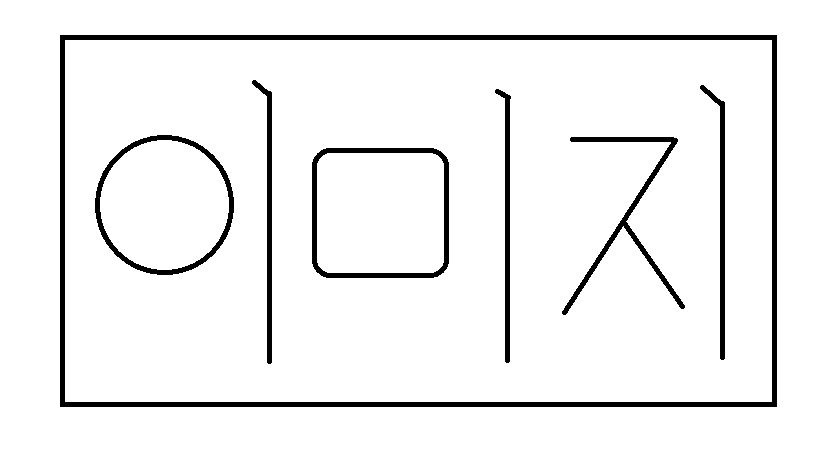

태그 : 웹페이지 내용을 수식하는 여러가지 문법
h1~h6 : 줄 전체를 차지하는 다양한 제목태그
strong : 진하게
u : 밑줄
br : 줄바꿈
p : 문단생성

img: 이미지 삽입, 크기조절
순번
없는
목록
순번
있는
목록
a : 다른 웹페이지로 옮겨갈 수 있는 하이퍼링크 생성
링크
아니면 이렇게 iframe 태그를 사용하여 웹사이트에 동영상을 바로 불러올 수도 있습니다.
돌아가기